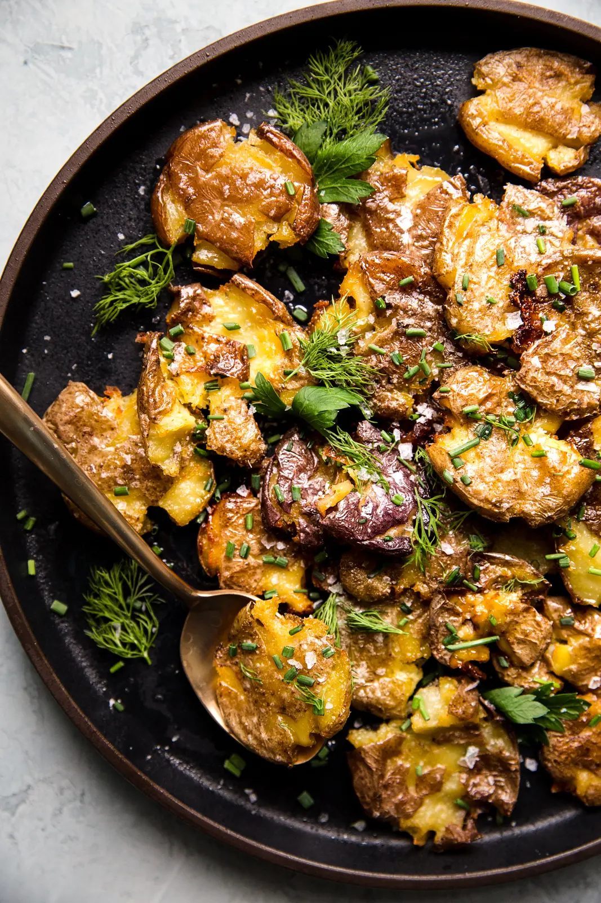

Smashed Potatoes
Crisp and golden-brown on the outside, soft and creamy in the middle, these crispy smashed potatoes are the perfect side dish for your dinner table.
Ingredients
- Baby Potatoes
- Kosher Salt
- Olive oil
- Granulated garlic
- Fresh herbs
Steps
- Boil the baby potatoes
- Drain them and let them dry.
- Lay them on an oiled baking sheet.
- Smash the potatoes using the bottom of a glass to gently press down.
- Brush the smashed potatoes with olive oil, and finish them with salt and garlic.
- Bake at 450 degrees Fahrenheit for 25 minutes.
- Take out of the oven and enjoy!